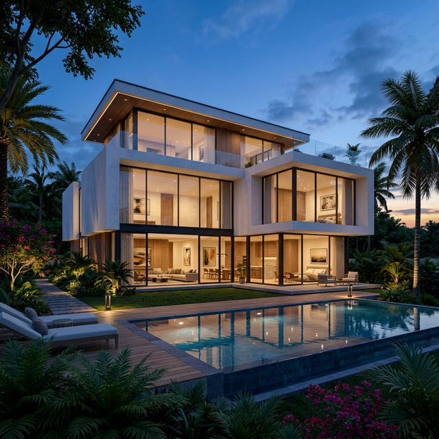
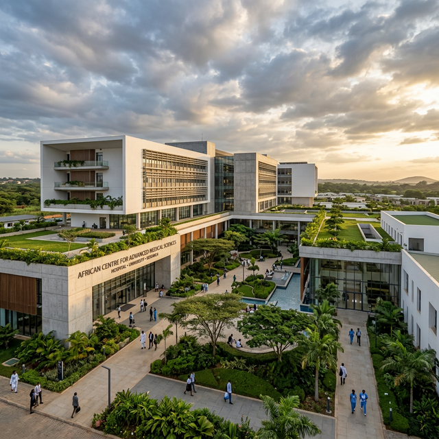
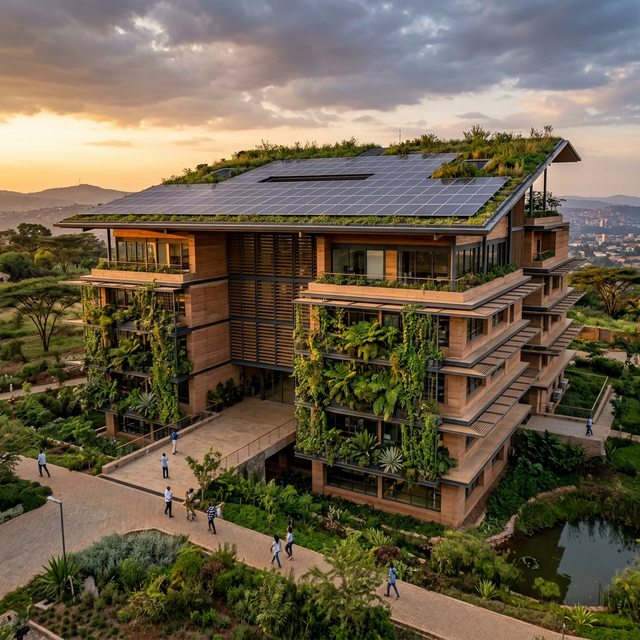

Our Portfolio
Featured Projects
A curated selection of defining architectural works.

Residential
Luxury Villa Complex

Commercial
Meridian Business Tower

Institutional
National Learning Center

Commercial
City Gateway Development

Residential
Green Horizons Estate
Case Comparisons
Site Transformations
Browse recent architectural milestones and their lifecycle from blueprint to reality.